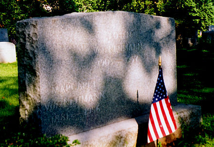

Trivia
- John von Neumann's previous name was Neumann János Lajos
- He boasts an IQ of 190, possibly the highest IQ ever
- He was a mathematician, physicist, computer scientist, economist and polymath
- During the Second World War he worked on the Manhattan Project to produce the first atomic bomb
- John Neumann married twice. He married Mariette Kövesi in 1930, just before emigrating to the United States. They had one daughter.
- He then divorced her in 1937 and married Klari Dan in 1938
- Von Neumann wrote 150 published papers in his life; 60 in pure mathematics, 20 in physics, and 60 in applied mathematics
- His last work, published in 1958 “The Computer and the Brain”, explores the analogies between computing machines and the living human brain
- John Neumann died in February 8, 1957 (aged 53)
Hover here to see how he died
He died from bone cancer. Did you expect something cooler?
Other facts
- John Von Newmann died under military security since there was a possibility that he may reveal military secrets while given medication.
- A lifelong agnostic, shortly before his death he converted to Roman Catholicism